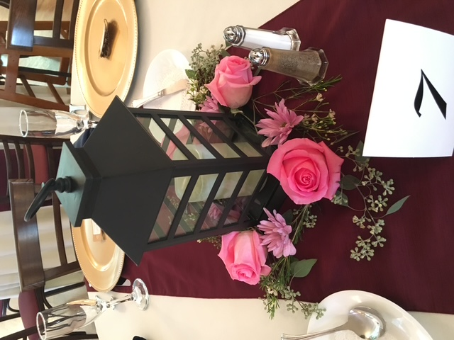

Serving Carlisle
Wedding flowers in Carlisle.
Carlisle blends a historic downtown with rolling Cumberland County farmland — which means its weddings range from candlelit historic venues to wide-open farm and barn celebrations. We design for both ends of that range, and everything between.
Historic & farmland weddings
Two very different design briefs.
Historic venues are visually rich already — woodwork, brick, character — so flowers there should complement rather than compete: period-feeling blooms, mid-scale arrangements, restraint done well. Barns and farms are the opposite: big volumes that reward abundance, height, and loose garden style. Tell us your Carlisle venue and we'll design for the actual space.
- Garden-style bouquets for barn & farm weddings
- Period-appropriate designs for historic venues
- Long-table garlands, runners & clustered centerpieces
- Ceremony arches, arbors & aisle designs
- Delivery and full setup throughout Cumberland County

Worth the drive
How we handle Carlisle weddings.
- Site visits when needed. If we haven't worked your venue before, we'll visit it before designing — light and scale change everything.
- Weather-smart design. Farm and outdoor weddings get heat-tolerant blooms and designs that hold up from setup through the last dance.
- Full setup, on schedule. Bouquets to the getting-ready suite, ceremony and reception florals in place before guests arrive.
Getting married in Carlisle?
Historic hall or hilltop barn — let's design flowers that belong there. Consultations are always free.
Book a Consultation